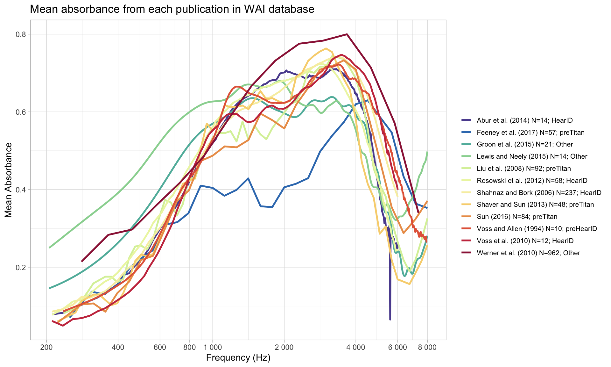

library(tidyverse)
library(RMariaDB)
con_wai <- dbConnect(
MariaDB(), host = "scidb.smith.edu",
user = "waiuser", password = "smith_waiDB",
dbname = "wai"
)
Measurements <- tbl(con_wai, "Measurements")
PI_Info <- tbl(con_wai, "PI_Info")
Subjects <- tbl(con_wai, "Subjects")
# collect(Measurements)SQL Mini Project
Should We Praise A Strong Peso?
SHOW TABLES;| Tables_in_wai |
|---|
| Codebook |
| Measurements |
| Measurements_pre2020 |
| PI_Info |
| PI_Info_OLD |
| Subjects |
| Subjects_pre2020 |
DESCRIBE Measurements;| Field | Type | Null | Key | Default | Extra |
|---|---|---|---|---|---|
| Identifier | varchar(50) | NO | PRI | NA | |
| SubjectNumber | int | NO | PRI | NA | |
| Session | int | NO | PRI | NA | |
| Ear | varchar(50) | NO | PRI | ||
| Instrument | varchar(50) | NO | PRI | ||
| Age | float | YES | NA | ||
| AgeCategory | varchar(50) | YES | NA | ||
| EarStatus | varchar(50) | YES | NA | ||
| TPP | float | YES | NA | ||
| AreaCanal | float | YES | NA |
SELECT *
FROM Measurements
LIMIT 0, 5;| Identifier | SubjectNumber | Session | Ear | Instrument | Age | AgeCategory | EarStatus | TPP | AreaCanal | PressureCanal | SweepDirection | Frequency | Absorbance | Zmag | Zang |
|---|---|---|---|---|---|---|---|---|---|---|---|---|---|---|---|
| Abur_2014 | 1 | 1 | Left | HearID | 20 | Adult | Normal | -5 | 4.42e-05 | 0 | Ambient | 210.938 | 0.0333379 | 113780000 | -0.233504 |
| Abur_2014 | 1 | 1 | Left | HearID | 20 | Adult | Normal | -5 | 4.42e-05 | 0 | Ambient | 234.375 | 0.0315705 | 103585000 | -0.235778 |
| Abur_2014 | 1 | 1 | Left | HearID | 20 | Adult | Normal | -5 | 4.42e-05 | 0 | Ambient | 257.812 | 0.0405751 | 92951696 | -0.233482 |
| Abur_2014 | 1 | 1 | Left | HearID | 20 | Adult | Normal | -5 | 4.42e-05 | 0 | Ambient | 281.250 | 0.0438399 | 86058000 | -0.233421 |
| Abur_2014 | 1 | 1 | Left | HearID | 20 | Adult | Normal | -5 | 4.42e-05 | 0 | Ambient | 304.688 | 0.0486400 | 79492800 | -0.232931 |
query <- "
SELECT
Identifier,
Frequency,
Instrument,
AVG(Absorbance) as mean_absorbance
FROM Measurements
GROUP BY Identifier, Instrument, Frequency;
"
avgs <- dbGetQuery(con_wai, query)unique(avgs$Identifier) [1] "Abur_2014" "Aithal_2013" "Aithal_2014" "Aithal_2014b"
[5] "Aithal_2015" "Aithal_2017a" "Aithal_2017b" "Aithal_2019a"
[9] "Aithal_2019b" "Aithal_2020a" "Aithal_2020b" "Aithal_2022"
[13] "AlMakadma_2021" "Downing_2022" "Ellison_2012" "Feeney_2017"
[17] "Groon_2015" "Hunter_2016" "Keefe_2003" "Keefe_2012"
[21] "Keefe_2017" "Lewis_2015" "Lewis_2018" "Liu_2008"
[25] "Merchant_2010" "Merchant_2015" "Merchant_2020" "Merchant_2021"
[29] "Myers_2018" "Nakajima_2012" "Pitaro_2016" "Rosowski_2012"
[33] "Sanford_2009" "Sanford_2014" "Shahnaz_2006" "Shaver_2013"
[37] "Sliwa_2020" "Sun_2016" "Sun_2023" "Voss_1994"
[41] "Voss_2010" "Voss_2016" "Werner_2010" custom_colors <- c(
"#5C4E9E", # For "Abur_2014"
"#387BBC", # For "Feeney_2017"
"#5FB8A9", # For "Groon_2015"
"#99D59F", # For "Lewis_2015"
"#D9F0A7", # For "Liu_2008"
"#ECF5AF", # For "Rosowski_2012"
"#F7EEAF", # For "Shahnaz_2006"
"#F8D37E", # For "Shaver_2013"
"#EC9D57", # For "Sun_2016"
"#E46647", # For "Voss_1994"
"#C9384D", # For "Voss_2010"
"#9C2045" # For "Werner_2010"
)
avgs |>
filter(Identifier %in% c("Abur_2014",
"Feeney_2017",
"Groon_2015",
"Lewis_2015",
"Liu_2008",
"Rosowski_2012",
"Shahnaz_2006",
"Shaver_2013",
"Sun_2016",
"Voss_1994",
"Voss_2010",
"Werner_2010"),
Frequency <= 8000 & Frequency >= 200) |>
ggplot(aes(x = Frequency, y = mean_absorbance, color = Identifier)) +
geom_line(size = 1) +
scale_x_continuous(
trans = "log10", # Apply logarithmic transformation
breaks = c(200, 400, 600, 800, 1000, 2000, 4000, 6000, 8000), # Custom breaks
labels = scales::label_number() # Keep original units
) +
scale_color_manual(values = custom_colors) +
labs(
x = "Frequency (Hz)", # Updated axis label
y = "Mean Absorbance"
)